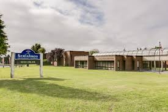
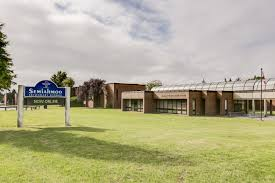

MIKKACHU
About Me!
Mikka Stasiuk is a quantum mechanics enthusiast as well as a futurist. She currently serves as a grade 10 student at Earl Marriott Secondary, however, in the coming school year, she will be engrossed in Semiahmoo Secondary's International Baccalaureate Program. With a passion for activity at the quantum realm and a futuristic mindset, after high school Mikka hopes to advance the next generation with new ideas/discoveries regarding the physical universe.
After high school, Mikka would preferably attend the University of Toronto or UBC, though, is also interested in SFU or Waterloo. She would like to earn her Bachelors in Physics with a Computer Science minor then progress towards a PhD in quantum physics. As a career, she currently yearns to be a Quantum Physics/Chemistry Professor at a Canadian or European university. Although, she is also considering a career as a quantum computing specialist or researcher at CERN Laboratory.
Mikka has many hobbies. She is an avid reader of Stephen King, Alan Bradley, Stephen Hawking and Michio Kaku. She is also an active volunteer with about 300 volunteer hours.
But most of all, Mikka really likes puns.
Large Hadron Collider at CERN Laboratory
 

left: Semi right: EMS
Programming Puns
#tower-of-pisa {
font-style: italic
}